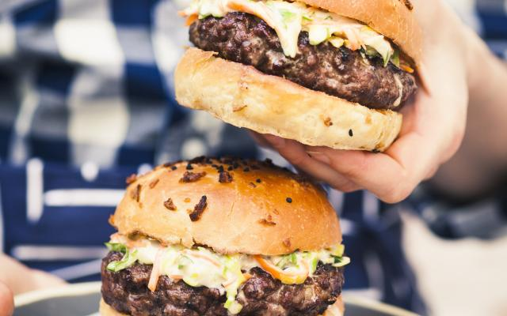

Gegrilde burger met coleslaw

Ingredienten
- 480g rundergehakt
- 4 hamburgerbroodjes
- 350g witte kool
- 1 wortel
- 4 el mayonaise
- peper en zout
Bereiding
- Spoel de wittekool en snij ze in dunne reepjes. Gebruik eventueel een keukenrobot. Schil de wortel en rasp
fijn.
- Meng de wittekool en de wortel met de wittewijnazijn en laat 1 uur marineren in de koelkast.
- Meng met de mayonaise, de geraspte mierikswortel en de suiker. Kruid met peper en zout.
- Verdeel het vlees in vier porties en vorm er vier hamburgers van. Grill deze op de barbecue en kruid met
peper en zout.
- Snij de broodjes doormidden en gril de snijkanten kort op de barbecue. Beleg de burgers met coleslaw en een
hamburger.